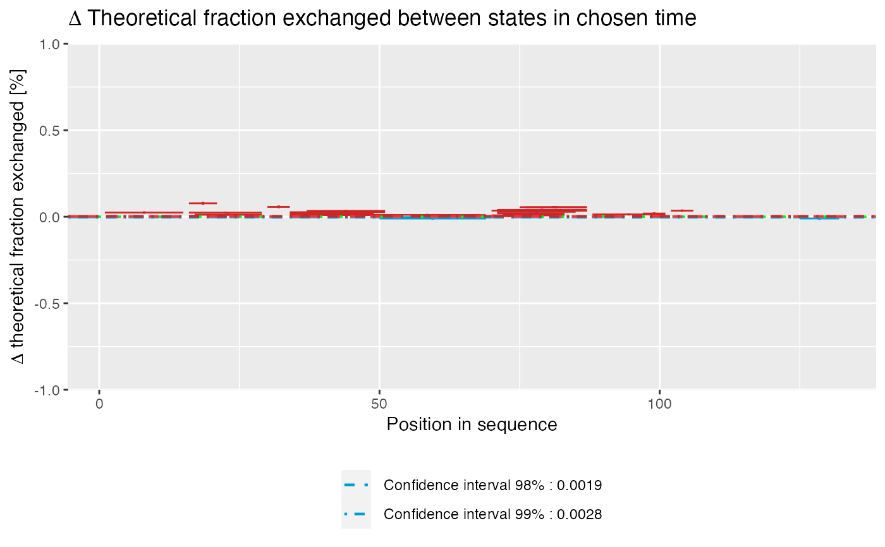
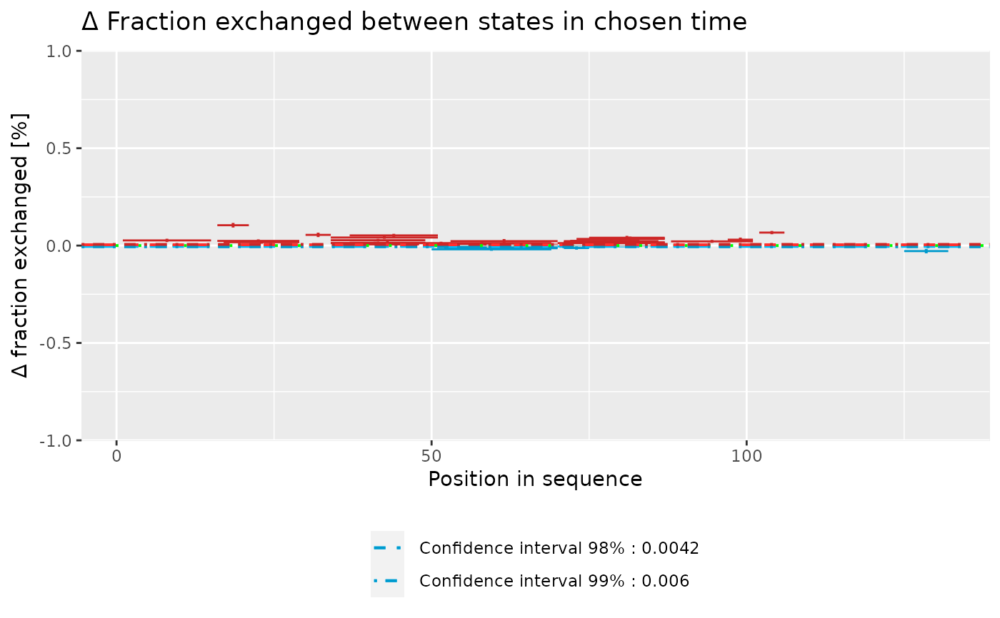
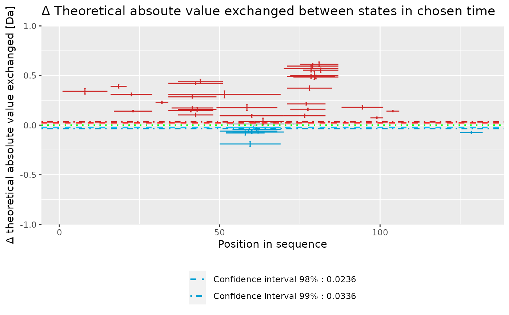
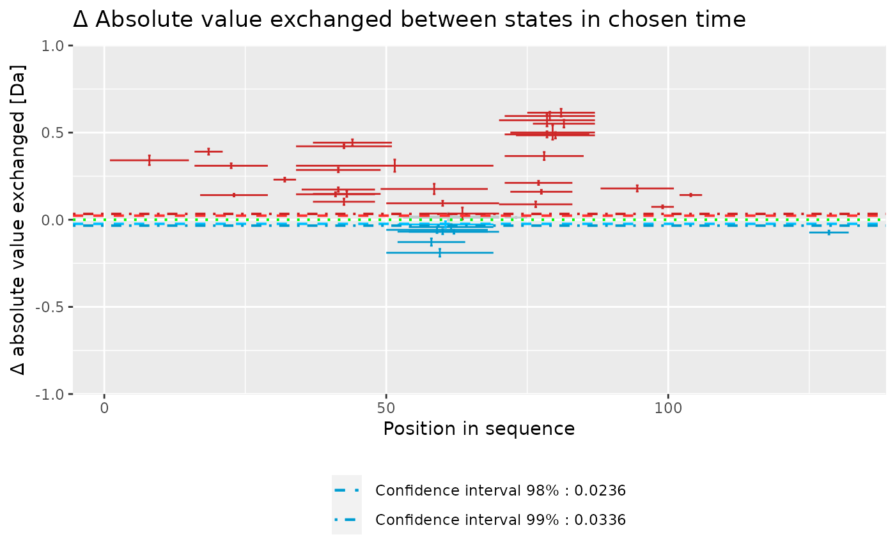

woods_plot.RdProduces Woods' plot based on theoretical or experimental HDX-MS data.
woods_plot( calc_dat, theoretical = FALSE, relative = TRUE, confidence_limit = 0.98, confidence_limit_2 = 0.99 )
| calc_dat | data as imported by the |
|---|---|
| theoretical |
|
| relative |
|
| confidence_limit | confidence limit. |
| confidence_limit_2 | confidence limit 2. |
a ggplot object.
...
This is the first version - multi-state calculations are not supported.
Woods, V.L., and Hamuro, Y. (2001). High resolution, high-throughput amide deuterium exchange-mass spectrometry (DXMS) determination of protein binding site structure and dynamics: utility in pharmaceutical design. J. Cell. Biochem. Suppl. Suppl 37, 89–98.
# load example data dat <- read_hdx(system.file(package = "HaDeX", "HaDeX/data/KD_180110_CD160_HVEM.csv")) # prepare dataset for states `CD160` and `CD160_HVEM` # in given time parameters calc_dat <- prepare_dataset(dat, in_state_first = "CD160_0.001", chosen_state_first = "CD160_1", out_state_first = "CD160_1440", in_state_second = "CD160_HVEM_0.001", chosen_state_second = "CD160_HVEM_1", out_state_second = "CD160_HVEM_1440") # plot Woods plot - theoretical & relative woods_plot(calc_dat = calc_dat, theoretical = TRUE, relative = TRUE, confidence_limit = 0.98, confidence_limit_2 = 0.99)# plot Woods plot - experimental & relative woods_plot(calc_dat = calc_dat, theoretical = FALSE, relative = TRUE, confidence_limit = 0.98, confidence_limit_2 = 0.99)# plot Woods plot - theoretical & absolute woods_plot(calc_dat = calc_dat, theoretical = TRUE, relative = FALSE, confidence_limit = 0.98, confidence_limit_2 = 0.99)# plot Woods plot - experimental & absolute woods_plot(calc_dat = calc_dat, theoretical = FALSE, relative = FALSE, confidence_limit = 0.98, confidence_limit_2 = 0.99)